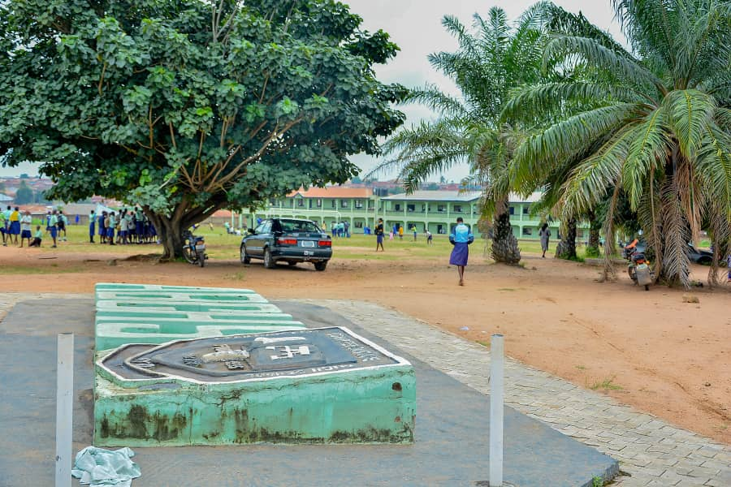

Aatan Baptist Church, Koso Oyo was at it again after two attempts of having a post primary school of her own. The first was the Secondary Modern School aborted by the government policy of scrapping secondary schools while the second was the conceding to Isale Oyo Community, a secondary school approved for the church simply to comply with the government policy of non approval of secondary schools for religious bodies. Both battles were lost gallantly at the approval stages of the two schools.
Best Academic Performance
Well Equipped Science Laboratory
Academic Enhancement Programs
The school curriculum is comprehensive consisting of all examinable subjects in the junior and senior secondary school curriculum. The subjects were duly accredited by the Government for the Junior Secondary (BECE) and WAEC and NECO for the Senior Secondary School Certificate. Periodic re-accreditation is been done to update the standard by the various examination bodies..
AATAN Baptist Comprehensive High School, Koso Oyo is renowned for its moral and academic performances in all competitions at the Local, State and National Levels. Its performance in WAEC and NECO examination was always proclaimed nationwide. It is a highly recognized achiever among the comity of secondary schools nationwide.